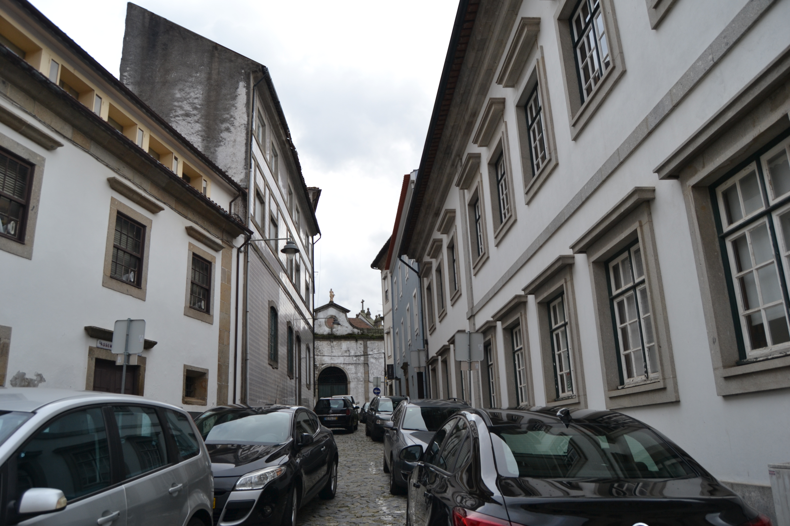

13 Rua Pequena
Como o nome diz é uma pequenina rua que ligava a rua das Oucias com a travessa da rua do Forno para a do Poço .
Respeitando o reticulado romano era mais uma das artérias do bairro medieval adjacente à catedral .
Na Idade Média era já pequena e permitia um melhor acesso ao mercado da olaria , então existente junto ao transepto da Sé . Por isso recebeu esse nome.
No séc. XVI, o célebre humanista Diogo Teive emprazou ao Cabido a casa n.º 2, passando a ser conhecida por rua do Teive . Até que por volta de 1620 Mateus Fernando Farto , talvez senhor de forte importância política ou económica, veio para aqui viver, tanto bastando para ser conhecida pelo seu apelido.
No Mappa, contudo, aparece como rua Pequena . Sabemos ainda que talvez a partir do fim da Idade Média, e durante cerca de um século, também foi chamada de rua Painsalvos , por nela ter morado o abade da freguesia transmontana do mesmo nome.
Embora pequena, tem 3 edifícios notáveis: o prazo n.º 1, grande construção em pedra, com fachada bem organizada e um recuado em toda a extensão; o prazo n.º 2, casa com quase excesso de aberturas, (sem comparação com qualquer outra em todo o Mappa); e o prazo n.º 5, construção também em pedra, de 2 pisos, com mais um piso, no seu último vão Sul, quase semelhando uma torre.
Das 4 casas existentes quer no lado Nascente, quer no Poente, 3 e 4, respectivamente, são prazos do Cabido .
Visão original


Visão atual
Casas
1 Corresponde ao n° 8 da Rua das Oussias , para onde tem a frontaria e serventia principais.
2 Francisco de Sousa Castro 875 reis e 2 galinhas Prazo constituído por casa, quintal e palheiro. este incorporado em 1618 e pertencente ao n.º 1.
3 D. Filipa Maria de Melo 240 reis Confronta, do norte, com casa dízima a Deus e com o n° 2 e, do sul, com casa foreira ao morgado de Real.
4 Corresponde ao n° 7 da travessa que vai da Rua do Poço ou de Santa Maria para a do Forno , para onde tem frontaria e serventia principais.
5 Miguel Teodósio Fiuza de Sottomayor. viúvo de Amarante 320 reis e 1 capão
6 Lic. Paulo de Sousa de Magalhães 220 reis e 2 capões Este prazo encontra-se unido desde 1583 .
7 Lic. Paulo de Sousa de Magalhães 220 reis e 2 capões Este prazo encontra-se unido desde 1583 .
8 Francisca Teresa Petiz 70 reis e 1 galinha A enfiteuta foi herdeira do Reitor de Freitas, José Ferreira Petiz . A casa foi construída, depois de 1587 , em pertenças do n.º 9 da Rua do Poço ou de Santa Maria .
9 Corresponde ao n.º 9 da Rua das Oussias , para onde tem a frontaria e serventia principais. Situa-se na esquina da Rua Pequena e terreiro das Oussias .